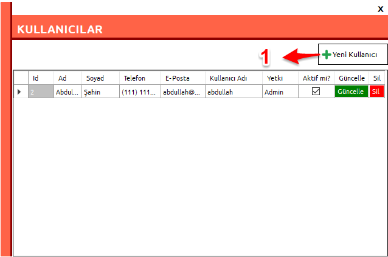

Nasıl Yapılır?
- Kullanıcı işlemleri
- Kullanıcı ekleme.
- Kullanıcı eklemede dikkat edilmesi gerekenler.
- Kullanıcı güncelleme ve silme.
- Müşteri İşlemleri
- Müşteri ekleme.
- Müşteri ekleme ve güncellemede dikkat edilmesi gerekenler.
- Kayıt ekleme.
- Dikkat edilmesi gerekenler.
- Geçmiş kayıtları görüntüleme ve silme.
- Rapor alma.
- Detaylı rapor alma.
- Hesaplanmış rapor alma.
- Mail Yedekleme
KULLANICI İŞLEMLERİ
Kullanıcı Ekleme


Kullanıcı Eklemede Dikkat Edilmesi Gerekenler
- Kullanıcı rolleri programı kullanacak kişilerin erişim yetkilerini belirler.
- Admin yetkisi en kapsamlı roldür. Bu role sahip kullanıcılar programda:
- Yeni bir kullanıcı oluşturup-silebilir. Kullanıcının rolünde değişiklik yapabilir. Kullanıcıyı aktif-pasif yapabilir. Bir kullanıcı pasif yapıldığında programa giriş yapamaz.
- Geçmiş kayıtlara erişip silebilir.
- Ayrıntılı ya da hesaplanmış rapor alabilir.
- Gün içerisinde kayıt ekleyip- silebilir.
- Mail yedekleme bildirimi alabilir.
- Yönetici yetkisi, admin yetkisinden sonraki kapsamlı roldür. 2,3,4. işlemeleri yapabilir. 5 ise opsiyoneldir.
- Çalışan yetkisine sahip bir kullanıcı sadece gün içerisinde kayıt ekleyip-silebilir.(4)
Kullanıcı Güncelleme ve Silme


- Kullanıcı güncelleme işlemini sadece admin yetkisine sahip bir kişi yapabilir. Güncelleme işleminde sadece kullanıcının rolü ya da aktifliği değiştirilebilir. Eğer bir kişiyi pasif yaparsanız programa giriş yapamaz.
- Kullanıcı silme işlemini sadece admin yetkisine sahip bir kişi yapabilir. Bir kullanıcı, program üzerinde müşteri ekleme ya da kayıt ekleme gibi bir işlem yapmışsa silinemez. Bu kullanıcıyı pasif yapabilirsiniz.
MÜŞTERİ İŞLEMLERİ
Müşteri Ekleme


Müşteri Ekleme ve Güncellemede Dikkat Edilmesi Gerekenler
- Müşterinin aldığı hizmetler alanında her müşteri için ayrı ayrı aldığı hizmetler ve birim fiyatları belirtilmelidir. Hesaplanmış rapor burada belirtilen rakamlara göre hesaplanmaktadır.
- Eğer bir müşteri kahvaltı hizmeti almıyorsa, kahvaltı kayıt ekleme formunda bu müşteri seçilemez. Aynı durum diğer hizmetler için de geçerlidir. Yukarıdaki örneğe göre Abc Gemicilik firması sadece öğlen ve gece yemeği hizmeti almaktadır. Dolayısı ile sadece bu formlarda görünür olacaktır.
- Bir müşterinin aldığı hizmetler güncelleme formunda değiştirilebilir.
- Bir müşteri bir hizmeti bırakacaksa; ay sonunda(hesap kesim tarihi) bu hizmet kaldırılmalıdır. Aksi halde henüz kesilmemiş hesap var ise hesaplanmayacaktır.
- Bir müşteri pasif yapılırsa kahvaltı, öğlen, akşam ya da gece yemeği formunda gözükmeyecektir.
KAYIT EKLEME İŞLEMLERİ
- Tüm kayıt işlemleri aynı şekilde yapılmaktadır. Aşağıdaki "Öğlen Yemeği Formunda" Müşteri seçeneklerinde sadece öğlen yemeği hizmeti alan müşteriler görünecektir.


Kayıt Eklemede Dikkat Edilmesi Gerekenler
- Eğer bir müşteri kahvaltı, öğlen, akşam ya da gece yemeği formunda gözükmüyorsa müşteri oluşturmada bu alanlar atlanmış demektir. Müşteri güncelleme formuna gidip ilgili hizmetleri seçiniz ve birim fiyatlarını belirleyiniz.
- Kayıt eklerken; ekstra müşteri harcamaları için açıklama yazmanız, detaylı raporda ekstra harcamanın içeriğini belirleme açısından fayda sağlayacaktır.
- Açıklama alanına müşterinin getirdiği fiş numarası da girilebilir.
GEÇMİŞ KAYITLAR
- Kayıt ekleme formlarında(kahvaltı, öğlen, akşam ya da gece) ve ana formda sadece bulunduğunuz güne ait kayıtları görebilirsiniz
- Eğer geçmiş tarihlere ait kayıtları görmek ya da hata yaptığınızı düşündüğünüz bir kaydı silmek istiyorsanız, geçmiş kayıtlar formuna gitmelisiniz.

burada istediğiniz tarih aralığında, istediğiniz müşteri ve hizmet için kayıtları listeleyebilir, güncelleyebilir ya da silebilirsiniz.
RAPOR ALMA

- Rapor alma formunda ilk önce tarih aralığı belirlemelisiniz.
- Eğer belirli bir müşteri için rapor alacaksanız, müşteriyi seçmelisiniz. Tüm müşteriler seçili iken listeleme yaparsanız belirtilen tarih aralığındaki tüm kayıtlar listelenir.
- Hesaplanmış rapor müşteri kayıt formunda her bir müşteri için belirtilen birim fiyatlara göre hesaplanır.
- Eğer herhangi bir listeyi Excel'e aktarmak isterseniz alttaki butonu kullanabilirsiniz.
MAİL YEDEKLEME
- Mail yedekleme işlemini her gün mesai bitiminde, tüm kayıtları girdikten sonra yapınız.
- Yedekleme işleminin başlayabilmesi için internet bağlantınız olmalıdır.